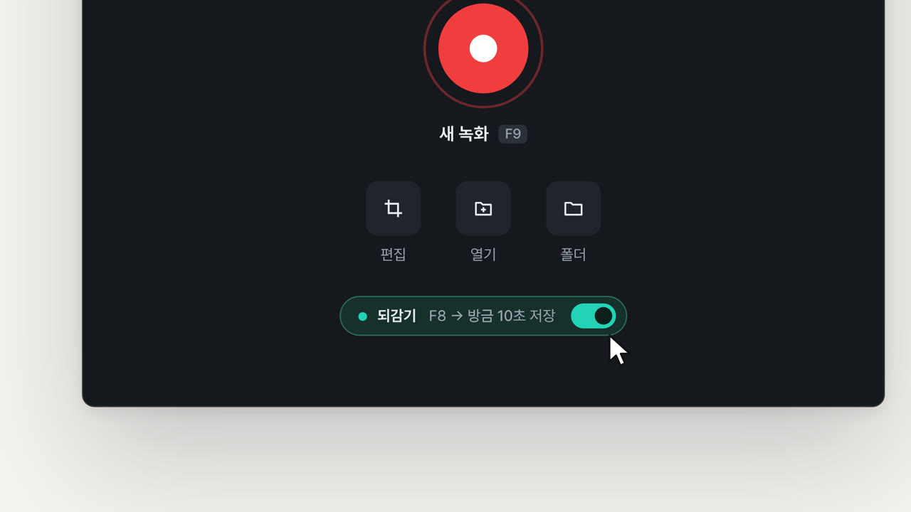
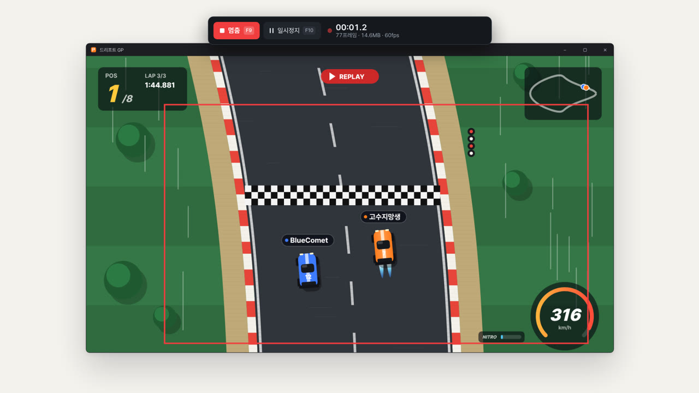
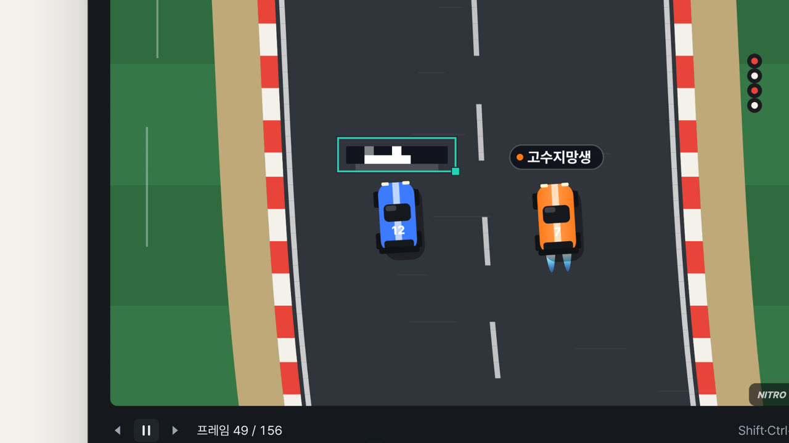
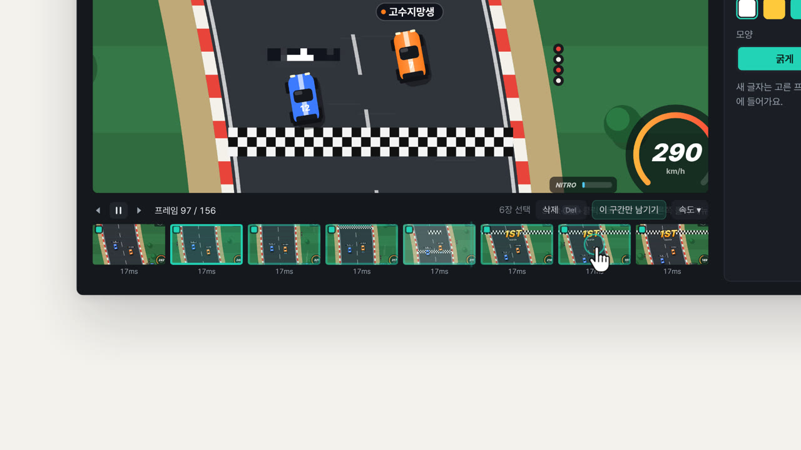
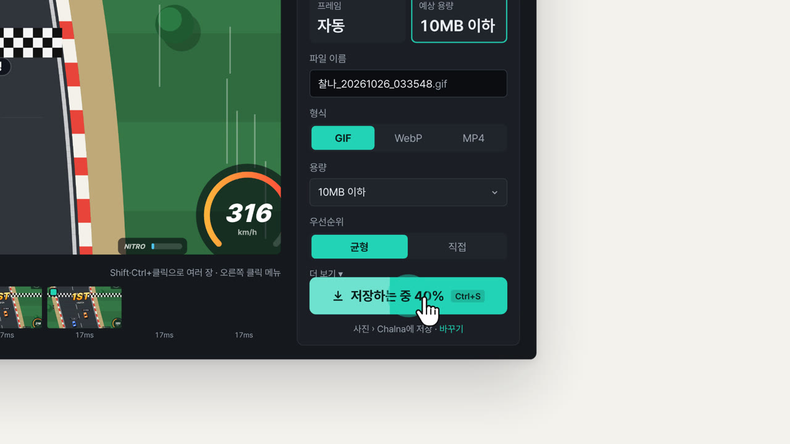
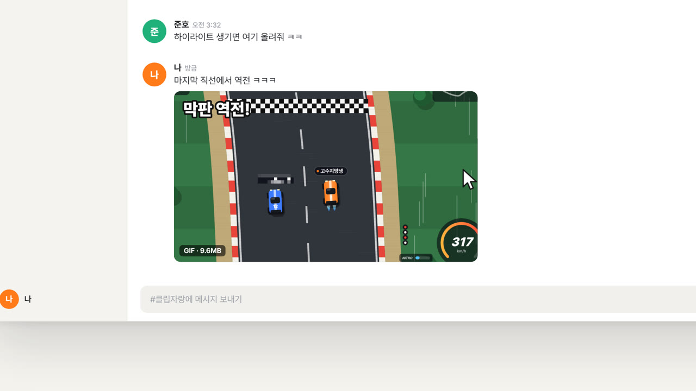

F8 한 번이면 방금 10초가 저장되고, F9로 원하는 곳만 녹화해요. 닉네임 모자이크, 구간 자르기, 디스코드 10MB 맞춤 저장까지 프로그램 하나로 끝내요.
Windows 10 (2004) 이상 · 관리자 권한 없이 설치 · 자동 업데이트
어떤 게임이든 — 되감고, 가리고, 다듬어서 GIF · WebP · MP4로
기능
되감기F8
켜 두기만 하면 주 모니터를 계속 담아 둬요. 결정적인 순간이 지나간 뒤 F8을 누르면 방금 5~30초가 확인 창이나 편집기 없이 저장 폴더에 바로 저장돼요.

영역 녹화F9
끌어서 사각형을 그리거나 창을 클릭하면 그 영역만, 바탕화면을 클릭하면 모니터 전체를 녹화해요. 찰나 창과 녹화 테두리는 영상에 찍히지 않아요.

모자이크M
가릴 곳을 한 번 끌어 그리면 앞뒤 모든 프레임에서 알아서 따라가요. 어긋난 프레임에서 상자를 옮기면 거기서부터 다시 맞추고, 확실하지 않은 프레임은 따로 표시해 줘요.

편집기
타임라인에서 여러 장을 골라 지우거나 그 구간만 남기고, 0.25~4배로 속도를 바꿔요. 글자는 크기·색·테두리를 정해 고른 프레임에만 넣을 수 있어요.

저장Ctrl+S
용량을 '10MB 이하'로 고르면 크기·FPS·화질을 알아서 줄여 그 안에서 가장 좋은 화질로 만들어요. 저장 전에 예상 용량과 실제로 압축한 화질을 미리 볼 수 있어요.

바로 공유
경로를 묻지 않고 사진\Chalna에 바로 저장하고, 알림의 [파일 보기]로 곧장 찾아가요. 가지고 있는 영상이나 GIF를 끌어다 놓으면 편집기로 열 수도 있어요.

형식별 용량
1280×720 · 60fps · 1.5초 합성 게임 화면 기준
Windows 10 (2004) 이상 · x64. 사용자 폴더에 관리자 권한 없이 설치되고, 켤 때마다 새 버전을 확인해 조용히 업데이트해요.
아직 코드 서명 전이라 처음 설치할 때 'Windows의 PC 보호' 창이 뜰 수 있어요. [추가 정보] → [실행]을 누르면 설치돼요.
네. 많은 게임이 플레이 중에 Windows 단축키를 막지만, 찰나는 F8·F9·F10의 실제 키 상태도 함께 살펴서 들어요. Shift를 누른 채 눌러도 돼요.
아니요. 화면을 2초 조각으로 압축해 메모리에만 담고, 오래된 조각은 버려요. 1080p · 30fps · 10초 기준 약 25MB예요.
기본은 사진\Chalna 폴더이고 설정에서 바꿀 수 있어요. 같은 이름이 있으면 덮어쓰지 않고 _2, _3을 붙여요.
켤 때와 6시간마다 새 버전을 확인하고, 녹화를 쉬는 동안 받아 둬요. 바로 업데이트하거나 다음에 끌 때 조용히 바뀌게 둘 수 있고, 설정 › 정보에서 끌 수 있어요.